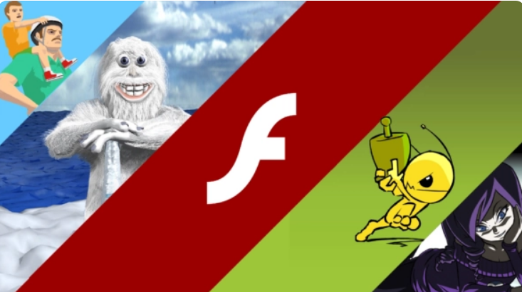
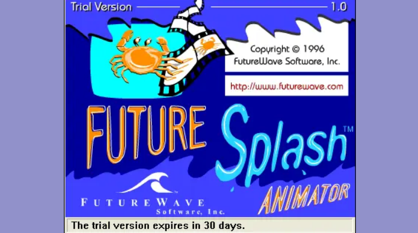
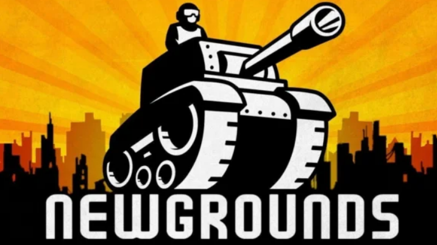
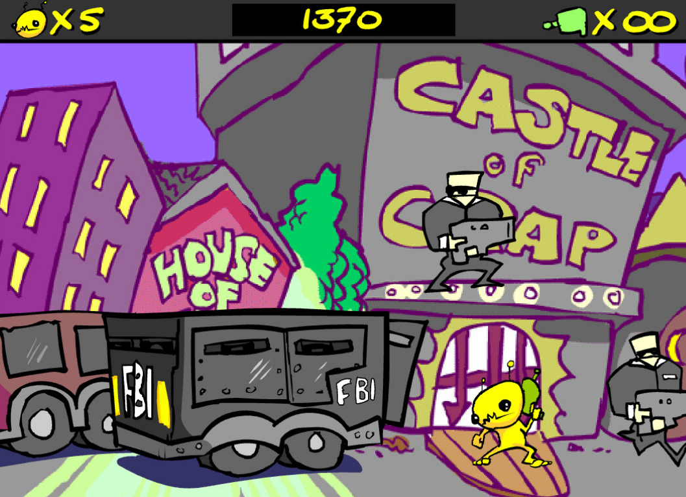
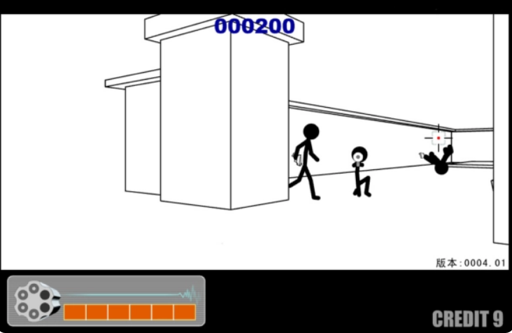
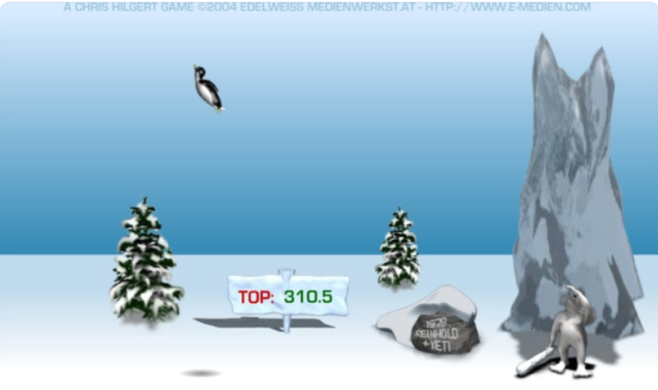
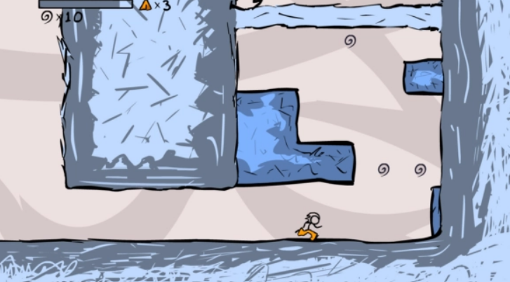
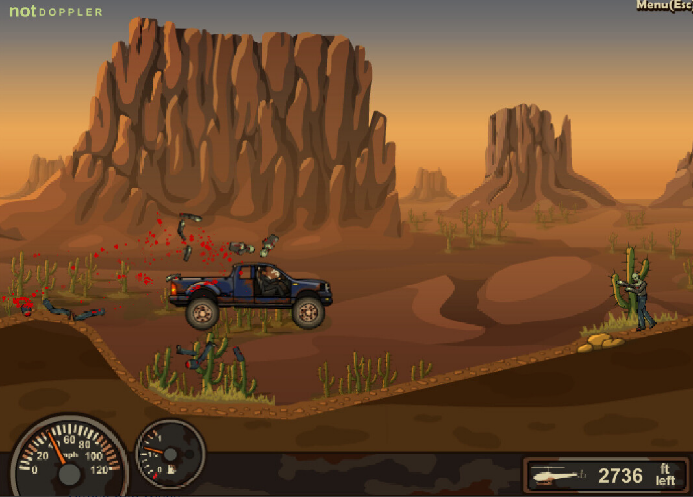
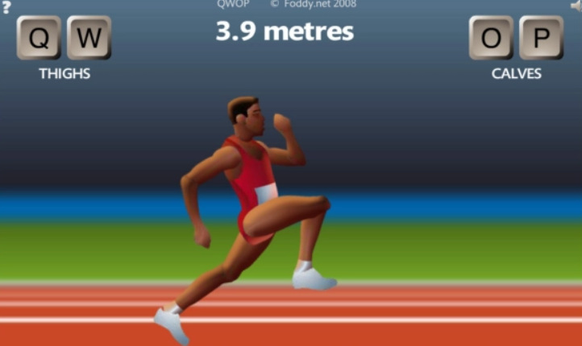
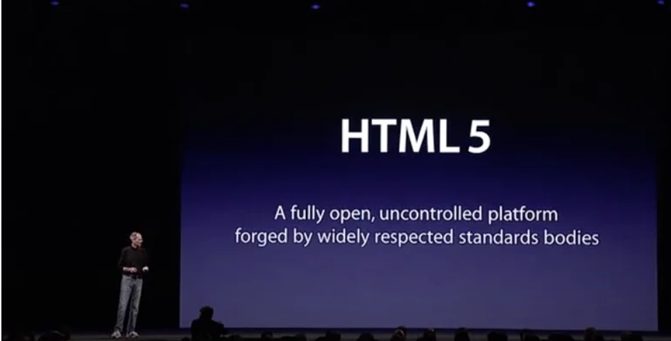

 НачалоПлатформа, навсегда изменившая игровую индустрию: в чем заключалась уникальность Flash-игр История появления и развития Flash началась задолго до 1996-го года — примерно за 10 лет до появления первого Flash-плеера. Технологию векторного морфинга начали применять еще с конца 1980-х в программе Fantavision для создания векторных анимаций при помощи клавиатуры и мыши. В 1991 году на основе этой разработки была выпущена игра Another World, а в 1993 году мир увидел Flashback: The Quest for Identity. Изначально главной задачей Flash-плеера являлось проигрывание анимации и отображение веб-графики на интернет-ресурсах, но 2000 год стал для технологии переломным. Тогда разработка получила собственный язык программирования, что позволило с ее помощью создавать браузерные игры.
 Начало
Неудивительно, что с того момента начал резко набирать популярность сайт Newgrounds, позволяющий любому желающему загружать на него собственные Flash-игры. Минимум 10 лет технология не испытывала никаких трудностей, появлялось все больше талантливых и креативных разработчиков игр, воплощались в жизнь самые странные и необычные идеи.
Однако с начала 2010-х популярность Flash начала резко падать. Виной тому развитие мобильных технологий, поскольку все больше программистов видело перспективу в Android и iOS.
В декабре 2020 года компания Adobe и вовсе прекратила обновление и распространение Flash Player из-за ненадежности и устаревания технологии. Эпоха ушла, а мы вспоминаем, какими были Flash-игры, чем они привлекали пользователей и как изменили игровую индустрию в целом.
Flash-проекты подарили новые игровые жанры
Flash-игры активно создавали с 2000-го года, но на протяжении 8 лет ничего серьезного энтузиастам так представить и не удалось. За столь долгий период были выпущены десятки миллионов игр, но только в 2009 году появился по-настоящему серьезный проект — Canabalt.
Игра оказалась незамысловатой (бег с препятствиями по разрушающемуся городу), но жутко затягивающей. Без преуменьшения — это была революционная разработка, поскольку она породила новый игровой жанр — бесконечный раннер. Сейчас это одно из самых популярных направлений игрушек на мобильных устройствах, и даже не посвященные в тему могут вспомнить названия подобных проектов: Subway Surfers, Temple Run, Jetpack Joyride и им подобные.
Canabalt оказалась настолько успешной, что удостоилась быть включенной в коллекцию музея Нью-Йорка как достояние современного искусства. Для понимания, там же находятся такие легендарные игрушки, как Tetris и Pac-Man. Это был прорыв и именно Canabalt вдохновил огромное количество разработчиков на создание действительно впечатляющих проектов.
Площадки вроде Newgrounds позволяли энтузиастам фокусироваться на создании игрушек, не упираясь во всевозможные бюрократические препятствия. Люди создавали игры только потому, что хотели это делать, мало задумываясь о получении дивидендов и прочих плюшек. Они экспериментировали, предлагая пользователям сыграть как в милые и безобидные, забавные, так и жесткие, а порой и весьма странные игры. Это был настоящий цифровой Дикий Запад!
Создавать игры могли даже далекие от программирования люди
Процесс создания мультимедийной единицы во Flash был в первую очередь ориентирован на дизайнеров, поэтому включал максимум использования искусства и анимации, минимизируя кодинг. Это позволяло людям, которые были далеки от программирования или вообще не занимались им, постепенно вливаться в работу, превращая простые анимации в собственные игры.
Ярким примером подобного является игра Xiao Xiao, выпущенная в 2001 году. Изначально это был набор анимированных иллюстраций, который со временем перевоплотился в полноценный 3D-шутер. Причем достаточно успешный, поскольку в 4-ю версию игры на сайте Newgrounds сыграло более 10 млн раз. Это был весомый показатель, поскольку даже многие тяжеловесные проекты AAA-класса на тот момент не могли похвастаться аналогичным успехом, не говоря уже о только начинающих свой путь Flash-играх.
  Начало
Поддерживать игры на Flash — просто
Особенность проектов, созданных при помощи Flash-технологии заключается в их максимально простой технической поддержке. Во-первых, они запускались на любых платформах, поддерживающих Flash Player. Во-вторых, даже сейчас без особых «танцев с бубном» можно запустить подобные игры 10- или 20-летней давности. Ничего подобного о коде, написанном под определенную ОС, такого не скажешь, поскольку постоянно приходится его дополнять (оптимизировать) ввиду выхода новых процессоров, моделей смартфонов, нововведений в операционках и т. д.
Сейчас такого часто не хватает: возможности взять и запустить мелкую игру для убийства времени в браузере компьютера. Считается, что для этого у каждого уже есть пара аппов на смартфоне. Но на самом деле площадок и игр, помогающих быстро переключить мозг и дать паузу, хватает. Что-то вроде классического «Эрудита»: отвлекаетесь на 15 минут, узнаете пару новых слов, вспомните десяток тех, которые давно не использовали.
Полная свобода мысли и действий
Децентрализация интернета в «нулевых» позволяла Flash-играм находить непосредственно свою аудиторию. Например, игра Fancy Pants Adventures на ресурсе Newgrounds была оценена 4 млн пользователей. Неплохой результат, но ввиду того, что проект был доступен на десятках подобных сайтов, всего в нее сыграли более 300 млн раз!
Тогда это являлось нормальной практикой, размещать Flash-игры сразу на множестве ресурсов. Такой подход позволял найти своего игрока, обрести популярность и перерасти в нечто большее. В 2021 году представить подобное сложно, поскольку каждая платформа стремится иметь собственный магазин приложений со своими ограничениями и правилами, что существенно сужает круг потенциальных игроков. В итоге многие амбициозные и одновременно странные игровые проекты в наше время оказываются вне сложившейся системы и не обретают популярность.
Flash-игры зачастую создавались ради веселья, некоторые из них и вовсе писали за считанные дни. Разработчики понимали, что если провалится один проект, они придумают другой, и в этом не было ничего страшного. Культура Flash-игр банально прощала оплошности, что стимулировало продвижение уникальных идей, а игровой дизайн развивался семимильными шагами.
  Начало
Неоценимое влияние на игровую индустрию
Давайте коротко пройдемся по главным особенностям Flash-игр, узнаем, как они изменили современный геймдев:
Flash-проекты подарили новые игровые жанры. Например, Canabalt дал старт бесконечным раннерам, а Rebuild оказался прародителем экономических стратегий;
Ориентированность Flash-игр на онлайн привела к тому, что многие разработчики перешли с носителей на распространение игр через онлайн-магазины;
Flash стал родоначальником такого направления, как инди-игры;
Ввиду того, что во Flash было занято множество дизайнеров, технология подарила множество игр с упором на визуальную составляющую. Благодаря этому современные игры действительно красивые и представляют собой отдельный вид искусства;
Flash косвенно повлиял на появление краудфандинговых платформ по типу знаменитого Kickstarter. Все из-за того, что для создания серьезных проектов разработчикам требовались деньги, поэтому им приходилось устраивать сборы средств среди поклонников и инвесторов на различных онлайн-ресурсах;
Flash подарил игровой индустрии такое понятие, как Аддоны. Проще говоря, это дополнения в играх (уровни, инвентарь, улучшения и т. п.), приобретаемые игроками за реальные, а не внутриигровые денежные средства.
   Начало
Судьбоносное письмо Стива Джобса
К 2010 году Flash-технология покорила сердца огромного числа людей, поскольку к тому времени Интернет проник во многие города и населенные пункты. С 2010 года огромную популярность начали набирать и смартфоны Apple — iPhone, что в теории сулило технологии еще больший успех. Однако сложилось все ровным счетом наоборот, поскольку в том же году Стив Джобс написал открытое письмо — «Размышления о Flash».
Именно это послание стало началом конца технологии, поскольку Джобс настаивал, что Flash ненадежен и уязвим, нестабилен и не оптимизирован, а также он серьезно расходует заряд аккумуляторов мобильных гаджетов. Также тогдашний глава Apple акцентировал, что технология не годится для использования на устройствах с тач-скрином, поскольку изначально ее проектировали под управление мышью.
С 2012 года количество Flash-игр в вебе уменьшилось вполовину, поскольку все больше разработчиков стремилось создавать игры непосредственно под операционные системы, отдавая предпочтение консольным и мобильным операционным системам. Да и сам Интернет начал стремительно меняться с начала 2010-х, ведь все больше пользователей начало пересаживаться на мобильные гаджеты, предпочитая сидеть в Интернете не с ПК, а со смартфонов на базе iOS, Android, Windows Phone и т. п.
Рост популярности гаджетов с сенсорными экранами, развитие Интернета, а еще нежелание разработчиков адаптировать Flash-проекты под все большее количество новых устройств привели к тому, что технология медленно, но уверенно стала угасать. В итоге, спустя 10 лет после судьбоносного письма Стива Джобса, 31 декабря 2020 года Flash окончательно умер, оставив серьезный отпечаток в игровой и интернет-индустрии.
 |